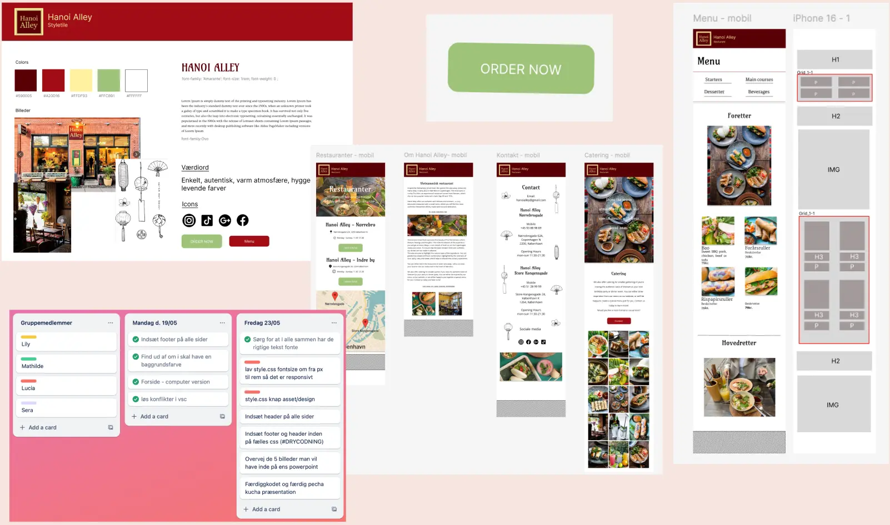
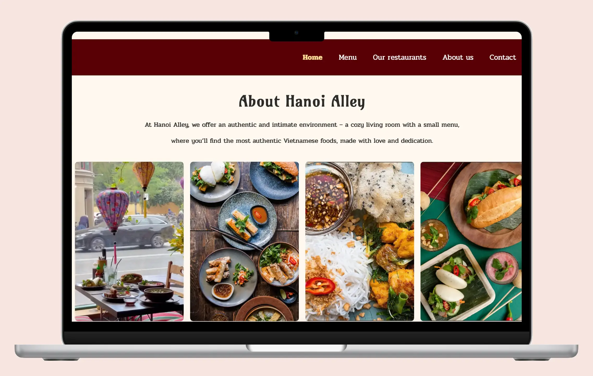

Grundlæggende indhold
Tema
Tema 5 på første semester havde fokus på indhold, og var vores første gruppeprojekt. Opgaven bestod i at redesigne en eksisterende virksomheds website, hvor vi som gruppe skulle samarbejde professionelt og struktureret. I projektet arbejdede vi med digitale prototyper, LottieFiles, GitHub, tests og kodning.
Derudover anvendte vi dagligt Trello og Scrum-metoder til at planlægge, fordele og følge op på opgaverne i gruppen. Vi skulle trække på vores tidligere viden fra de foregående temaer for at analysere og vurdere virksomhedens eksisterende site. Som en del af den indledende proces udarbejdede vi wireframes, styletile, billedstil og målgruppeanalyse, som dannede grundlaget for vores redesign.
Læring
Gennem dette projekt har jeg fået en større forståelse for, hvordan gruppearbejde fungerer på første semester. Jeg har lært, hvordan man griber processen an, når man skal redesigne en hjemmeside, samt hvilke former for research og test der er relevante for at skabe det bedst mulige resultat.
Derudover har jeg opnået erfaring med Trello, GitHub og Scrum som projektstyringsværktøjer. Trello har hjulpet mig med at skabe overblik over projektet og opdelt opgaverne i overskuelige trin. GitHub har gjort det muligt for os som team at arbejde parallelt med hver vores del og nemt samle det hele. Samlet set har disse værktøjer gjort samarbejdet mere struktureret og effektivt i vores team.
Proces & løsning
Jeg greb opgaven an ved først at læse opgaveformuleringen grundigt for at skabe mig et overblik over krav og formål. Opgaven gik ud på at vi som team skulle finde en eksisterende hjemmeside med forbedringspotentiale i forhold til design og indhold. Som team begyndte vi derfor med at undersøge og vurdere forskellige hjemmesider, indtil vi fandt den, som vi ønskede at redesigne. Herefter gik vi i gang med vores research og planlægning. Under udviklingsfasen stod vi hver for vores egen HTML-side. De fælles sider som forsiden, fordelte vi imellem os, alt efter hvem der havde den mindst krævende individuelle side. Det gjorde vi for at sikre en fair og effektiv arbejdsfordeling, så alle kunne nå deres del.
Klik på skærmen for at åbene min opgave
Jeg udarbejdede opgaven i samarbejde med mit team og i overensstemmelse med opgavespecifikationerne. Vi begyndte projektet med en fælles researchfase, hvor vi udarbejdede styletiles, moodboards og wireframes for at skabe en visuel og strukturel retning for vores redesign. Som en del af projektstyringen oprettede vi et Trello-board, som vi dagligt brugte til at holde overblik over opgaver og vores aftalte deadlines.
Det gav os et klart indblik i, hvad hvert teammedlem arbejdede på, og hjalp os med at undgå dobbeltarbejde og sikre, at alle opgaver blev lavet til tiden. Vi etablerede også et fælles GitHub-repository, så vi kunne arbejde parallelt på forskellige HTML- og CSS-sider uden at forstyrre hinandens arbejde. Vi brugte vi GitHub løbende til at dele vores individuelle bidrag gennem commits, pull requests og merges, hvilket sikrede en struktureret og effektiv samarbejdsproces.